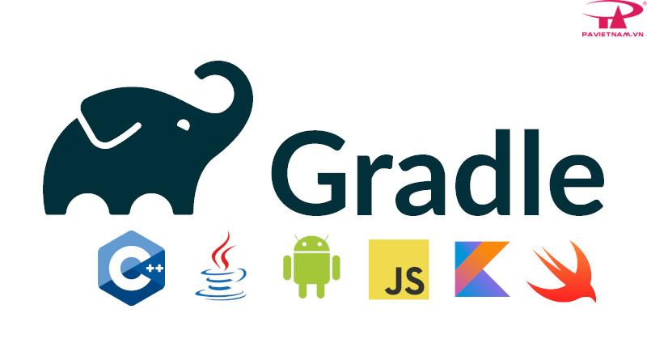

Essential Tools for Android Development
-
Android Studio
Android Studio is the official integrated development environment (IDE) for Android app development, based on IntelliJ IDEA. It provides a comprehensive set of tools and features to help developers create, test, and debug Android applications efficiently. Android Studio includes a code editor with advanced code completion, refactoring, and analysis capabilities, as well as a visual layout editor for designing user interfaces. It also offers built-in support for version control systems, emulators for testing apps on different devices, and integration with the Android SDK and other development tools.
-
Gradle
Gradle is a powerful build automation tool used primarily for Java and Android projects. It is designed to be flexible and extensible, allowing developers to define custom build logic using a domain-specific language (DSL) based on Groovy or Kotlin. Gradle manages project dependencies, compiles source code, runs tests, and packages applications into distributable formats such as APKs for Android. It also supports multi-module projects, incremental builds, and integration with popular IDEs like Android Studio. Gradle's performance and scalability make it a popular choice for building complex software projects.
Learn more now!
 -
Firebase
Firebase is a comprehensive platform developed by Google that provides a suite of cloud-based services and tools for building and managing mobile and web applications. It offers a range of features